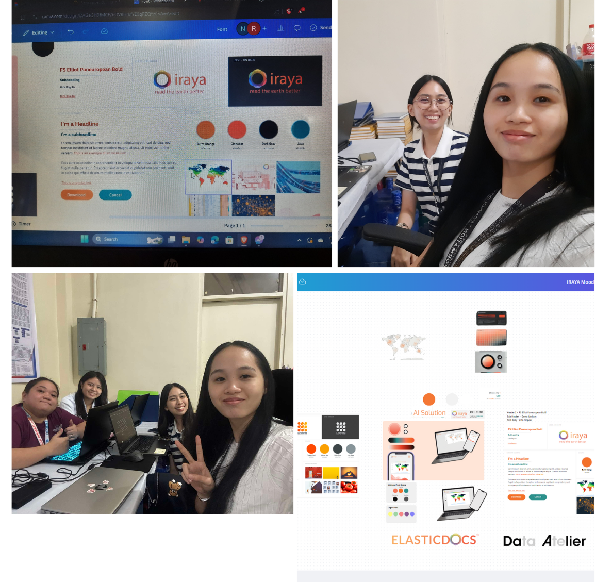

FEBRUARY 03 - 07, 2025
Today was our first meeting with the employees and CEO of Iraya Energies. Ms. Hilde introduced the company and its operations. We were then asked to draw two things that represent us using Figma. I drew a bowl of ramen for my love of cooking and a cabinet for my woodworking hobby. I shared how these reflect my personal interests.
The meeting was welcoming and relaxed, so I never felt nervous. Before starting our task, they showed us an example of the site we’d be working on, giving us a clear idea of what to expect. The meeting ended around 5 PM.
The meeting was welcoming and relaxed, so I never felt nervous. Before starting our task, they showed us an example of the site we’d be working on, giving us a clear idea of what to expect. The meeting ended around 5 PM.
FEB03 ORIENTATION
FEB04 DEPLOYMENT DAY2

I arrived at the university at 7:30 AM and completed my biometrics by 7:55 AM. After taking a documentary photo, our team worked on Iraya's moodboard for the proposed system. Due to color palette changes, we created two moodboards, finishing by 4:00 PM. This experience helped us understand the design process, adapt to client changes, and strengthen our teamwork skills.

I arrived at the university at around 7:45 AM and completed my biometrics at 7:59 AM. After that, I took a documentary photo to mark the second day of my OJT.
Since we had already completed the initial design for the Iraya moodboard, we contacted Ma'am Hilde for an update. While waiting for her response, we decided to continue searching for more inspirational designs for the demo system that we are supposed to create.
Since we had already completed the initial design for the Iraya moodboard, we contacted Ma'am Hilde for an update. While waiting for her response, we decided to continue searching for more inspirational designs for the demo system that we are supposed to create.
FEB05 DEPLOYMENT DAY3
I arrived at the university around 8:00 AM and completed my biometrics at 8:10 AM. Afterward, when I arrived at NLP, the office where we do our tasks, our professor advised us to work from home. Apparently, the university's power supply was low, and there was no internet connection, so my partner and I decided to head home.
In the afternoon, we had a meeting with Ma'am Hilde, where she informed us about the next task: the Demo Page Design. After the meeting, my partner and I called to discuss the new task, and we were able to complete a few demo page designs.
In the afternoon, we had a meeting with Ma'am Hilde, where she informed us about the next task: the Demo Page Design. After the meeting, my partner and I called to discuss the new task, and we were able to complete a few demo page designs.
FEB06 DEPLOYMENT DAY4

Today, we continued working from home due to the suspension. We focused on exploring more designs and color palettes, ensuring that Ma'am Hilde would have multiple options to choose from.
In the afternoon, I began creating my internship blog site for our weekly blog updates.
In the afternoon, I began creating my internship blog site for our weekly blog updates.